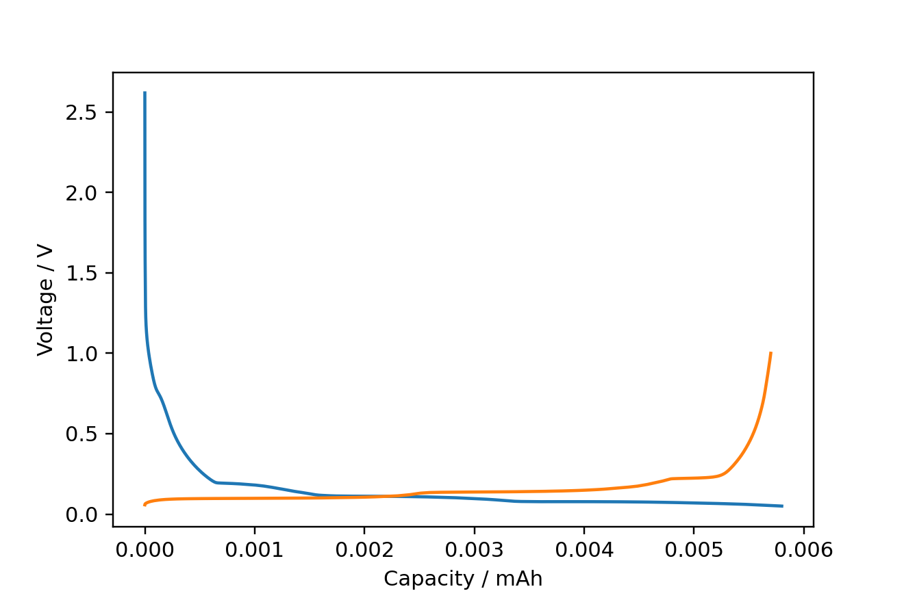
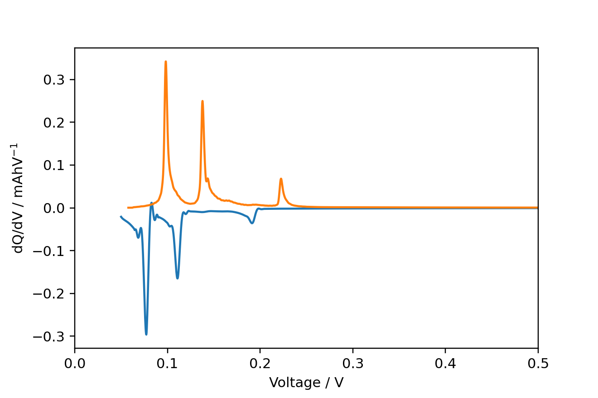
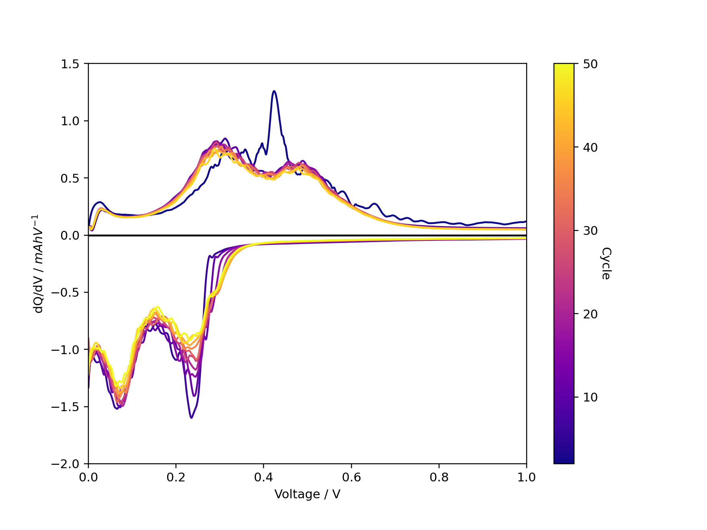

navani
Navani is a Python module for processing and plotting electrochemical data from battery cyclers, combining other open source libraries to create pandas dataframes with a normalized schema across multiple cycler brands. It is intended to be easy to use for those unfamiliar with programming. Contains functions to compute dQ/dV and dV/dQ.
Currently supports:
- BioLogic MPR (
.mpr) - Arbin res files (
.res) - Simple
.txtand Excel.xls/.xlsxformats produced by e.g., Arbin, Ivium and Lanhe/Lande - Neware NDA and NDAX (
.nda,.ndax)
The main dependencies are :
- pandas
- galvani (BioLogic MPR)
- mdbtools (for reading Arbin's .res files with galvani).
- NewareNDA (for reading Neware's NDA and NDAx formats).
Installation
You will need Python 3.9 or higher to use Navani.
It is now advised to install navani using uv, to manage dependencies.
To install Navani and its dependencies clone this repository and use uv to setup a virtual environment with the dependecies:
git clone git@github.com/be-smith/navani
cd navani
uv venv
uv sync
You should now have an environment you can activate with all the required dependencies (except mdbtools, which is covered later).
To activate this environment simply run from the navani folder:
source .venv/bin/activate
If you would like to contribute to navani it is recommended to install the dev dependencies, this can be done simply by:
uv sync --all-extras --dev
If don't want to use uv it is still stronly recommended to use a fresh Python environment to install navani, using e.g., conda create or python -m venv <chosen directory.
To install navani, either clone this repository and install from your local copy:
git clone git@github.com/be-smith/navani
cd navani
pip install .
or install directly from GitHub with pip:
pip install git+https://github.com/be-smith/navani
The additional non-Python mdbtools dependency to galvani that is required to read Arbin's .res format can be installed on Ubuntu via sudo apt install mdbtools, with similar instructions available for other Linux distributions and macOS here.
Usage
The main entry point to navani is the navani.echem.echem_file_loader function, which will do file type detection and return a pandas dataframe.
Many different plot types are then available, as shown below:
import pandas as pd
import navani.echem as ec
df = ec.echem_file_loader(filepath)
fig, ax = ec.charge_discharge_plot(df, 1)

Also included are functions for extracting dQ/dV from the data:
for cycle in [1, 2]:
mask = df['half cycle'] == cycle
voltage, dqdv, capacity = ec.dqdv_single_cycle(df['Capacity'][mask], df['Voltage'][mask],
window_size_1=51,
polyorder_1=5,
s_spline=0.0,
window_size_2=51,
polyorder_2=5,
final_smooth=True)
plt.plot(voltage, dqdv)
plt.xlim(0, 0.5)
plt.xlabel('Voltage / V')
plt.ylabel('dQ/dV / mAhV$^{-1}$')

And easily plotting multiple cycles:
fig, ax = ec.multi_dqdv_plot(df, cycles=cycles,
colormap='plasma',
window_size_1=51,
polyorder_1=5,
s_spline=1e-7,
window_size_2=251,
polyorder_2=5,
final_smooth=True)

Simple jupyter notebooks and Colab notebooks can be found here for Jupyter and here for Colab.
Whilst a more detailed Colab notebook can be found here.